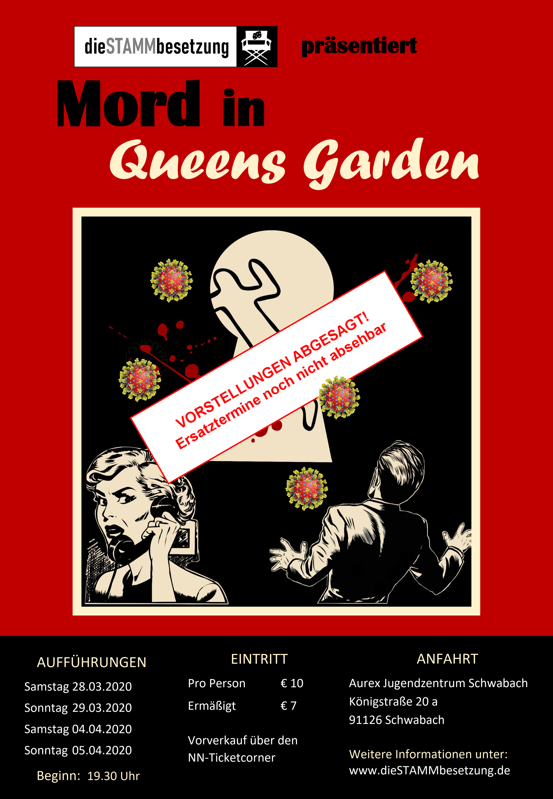

Ehemalige Schüler der Theatergruppe der Herrmann-Stamm-Realschule finden sich zusammen, um euch ein weiteres Mal auf der Bühne zu begeistern.
-
theatersProduktionen
Mord in Queen's Garden
warningWichtige Information
Aufgrund der aktuellen Situation wegen Corona / Covid-19 werden alle Aufführungen abgesagt bzw. ausgesetzt. Wann es Ersatztermine geben wird, kann noch nicht abgesehen werden. Wir geben sie hier natürlich bekannt, sobald sie feststehen.
Damit behalten die Tickets ihre Gültigkeit, jedoch empfehlen wir aufgrund der noch nicht planbaren Ersatztermine, die bereits erworbenen Tickets bei der jeweiligen Verkaufsstelle zurückzugeben. Der Ticket-Preis wird erstattet.
In einem englischem Landhotel begrüßt die Besitzerin eine Schar von Gästen, die sich scheinbar fremd sind, aber alle irgendwie mit Mr. Cool zusammenhängen, der die teuerste Suite gemietet hat. Bei einem Stromausfall überlebt einer der Gäste die Dunkelheit nicht. Doch zum Glück gibt es ja Inspektor Lanlay, seine Assistenten und viele Verdächtige...

-
peopleBesetzung